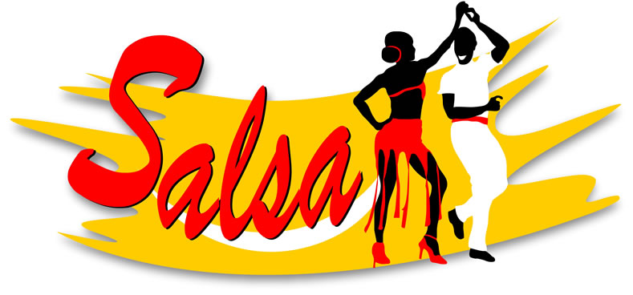

Salsa

(La salsa es un género musical) de música afro caribeña surgió en Nueva York. Fue creado por inmigrantes latinoamericanos, especialmente de Cuba, Puerto Rico y República Dominicana, que en los años sesenta mezclaron ritmos tradicionales latinos con elementos del jazz según el ejemplo del mambo y del chachachá. Esto hizo que con lo que dieron a fondo a la música con varios tipos de instrumentos de percusión, el estilo salsa es la principal música tocada en los clubes latinos y es el o pulso esencial de la música latina, de acuerdo con el autor Ed Morales. Y cuya figura precursora fue, el dominicano Johnny Pacheco al crear la pauta a seguir con su empresa, Fania Records.
Página
Portada